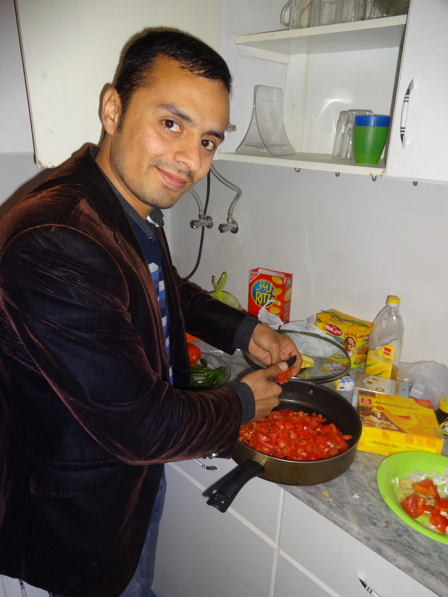
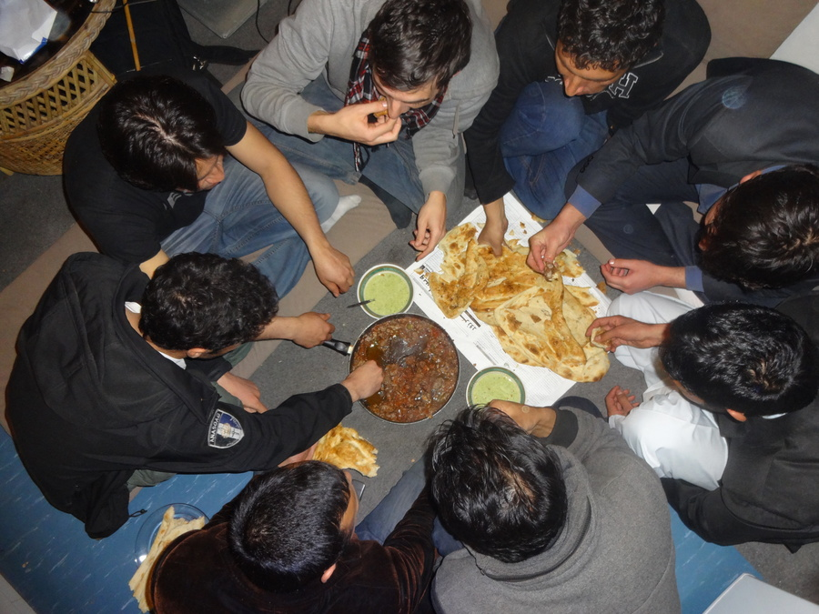
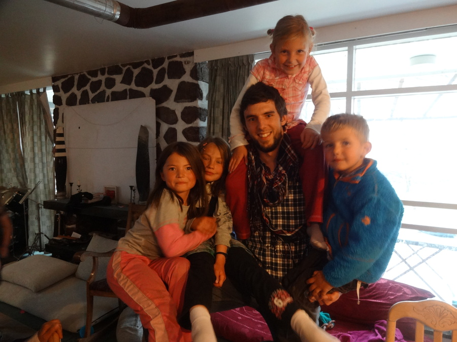
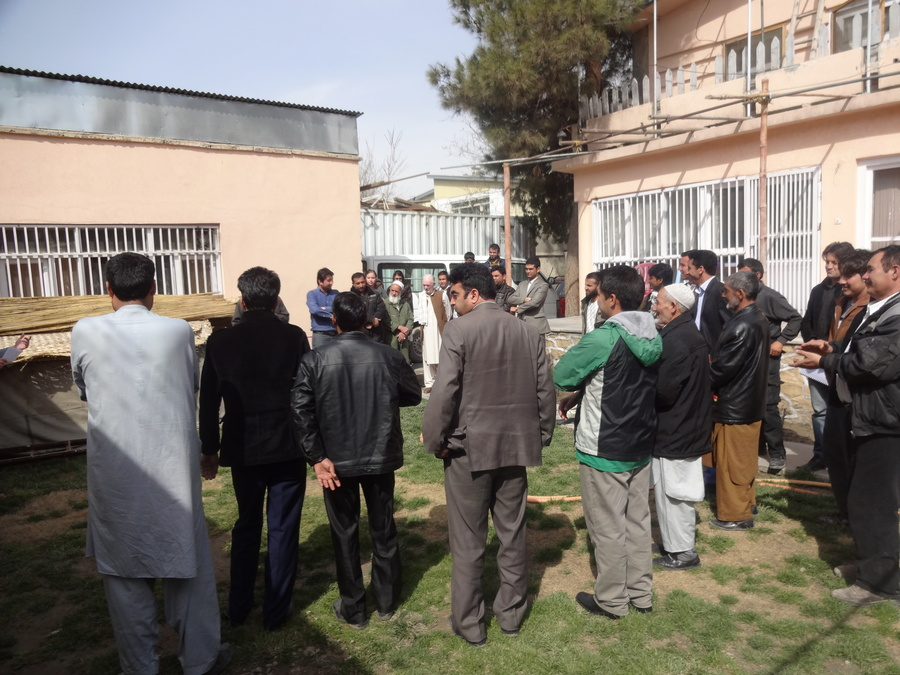

Freunde
geschrieben am Saturday, March 23, 2013
Egal wohere das mer goht - äs isch eifach immer öppis wunderschöns neue Fründe z"gwünne". Jedefalls hanis do würkli sehr guet mit dä Afghane. Ha au zGfühl das weni mi würkli umd Sproch bemühe dases au hilft. Eifach wils inä zeigt dasi würkli wett mit ihne "läbä". Ha denn mol ali Mitarbeiter zu mir iglade (choche loh hani denn sie, die chönd das nämli viel besser):
sAfghanische Ässä isch würkli sehr guet. Do heds irgendes Fleisch/Tomate/Scharf/wasauimmer Gmisch gäh. Däzue gits immer Nan (Brot).
Choche chönds würkli sehr guet. Ich mag dEifachheit vom ganze. Ei Pfanne und alli ässäd bis fertig isch. Isch sowieso sehr vorbildlich wie sie zteile bereit sind. Muesch der viel weniger Gedanke mache wend öpper um Hilf frögsch. Aber das isch halt dä Nochteil vo üsem individualisierte Weste...
Mir händ denn churz drufabe nochli Musig zämä gmacht. Ein Afghan cha "Rubab" spiele, so äs typischs orientalischs Instrument, mir händ denn irgendwas zämä improvisiert. Aber urteiled selber ob ihrs schön finded :-)
Das sind alles mini Mitarbeiter us dä IT-Abteilig. sVideo was am Tanze sind chani jetzt nid würkli verantworte ufäzstelle :-)
Ansuschte hani au relativ viel mit Usländer (Amis & Schwizer) Kontakt und wird dött iglade. Und wil die Westler fasch alli Chind händ, gsehts denn teilwis so us:
So i richtige Afghane Hüser bini leider nonid gsi (iglade wirdi vo Westler!). Aber das chunnt jetzt so langsam. Leider hani us Sicherheitsgrüne Naoroz (Neujahr) "verpasst". Das heisst mäh hed müesse im Quartier blibe und hed nid chönne usä go Lüt bsueche. Neujohr wird do mit offne Türe gfiiret.
Do hed än Schwizer no ä Asproch ghalte für Naoroz. Interessant isch vor allem wod Frau sind, wemer ganz gnau luegt gseht mer das sie sich irgendwo im Hintergrund versteckt händ. Fraue halted sich im allgemeine eifach immer und überall zrugg. Wennd goh ässä hole gohsch und a ihnä verbi laufsch denn wicheds dir us als wärsch inexistent. Naja aber so isch das halt i därä Kultur, smachts nid besser das sowohl sie wie au ich nid recht wüssed wie agiere uf änand :-)
Ansuschte
Ich bi recht usglaschtet (drum schribi nüm so hüfig). Ha würkli viel ztue, gib ca. 10h "Schuel" mittlerwile, was vo Computergrundwüsse über mathematischi Sache wie "was isch 3 hoch 3" so recht viel verschiedes beinhaltet. Und sus füehri eigentlich recht viel verschiedeni System i oder verbessere sie, wenn möglich (und a dä öbig mueni no mini Open Source Sache abarbeite, Sproch lerne und bi ab und zue iglade).
Näbäd däm woni obe erwähnt ha bini au no ufem Flughafe gsi (zu däm schriebi spöter mol was) und mach recht viel Sport do - Volleyball, Fuessball und jetzt denn mol no Ping-Pong. Sie hätteds nid besser chönne treffe. Die einzige Sportarte woni regelmässig usüebe :) Ah jo und dä Sport Schach dörfmä nid vergesse. Aber dött verlüri hoffnigslos gägänän 50 jöhrige Afghan wo 5mol schneller spielt.
sHed 2 Täg gregnet und das isch mer do irgendwie nid gwohnt :-)
Liebe Grüess id Schwiz!